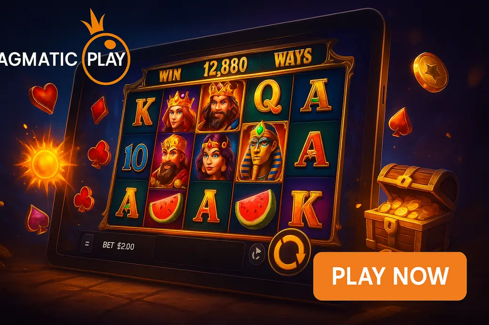

Pragmatic Play Not on Gamstop

Last Updated: 5 October 2026 | Verified by iGaming experts
The short version: Pragmatic Play not on GamStop means offshore casino sites carrying Pragmatic Play slots, live tables and instant-win games outside the UK self-exclusion network. That sounds handy, but it is not a loophole for anyone who has self-excluded. If GamStop is active for you, stay away. Honestly, no bonus is worth undoing that.
For players who are eligible and want Pragmatic slots not on GamStop, the useful stuff is simple: look for real licences, visible game info, fast banking, sensible limits, and a lobby where the search bar actually works. Sweet Bonanza, Gates of Olympus, The Dog House Megaways and Big Bass Bonanza should not be buried behind a messy menu.
Top-5 Pragmatic Play Casinos Not on GamStop
- Pragmatic Play slots and live games
- Crypto-friendly cashier
- Clean mobile lobby
- Strong slot tournament schedule
- Bitcoin withdrawals can be quick
- Huge provider lobby
- Pragmatic live casino tables
- Simple game categories
- Card and e-wallet options
- Sportsbook plus slot lobby
- Good for mixed bankrolls
- Fast-loading game pages
- Large Pragmatic Play catalogue
- Live games and crash titles
- Modern desktop layout
The best Pragmatic Play casinos not on GamStop are not just the ones shouting the biggest bonus. That is usually bollocks. The stronger sites make the essentials obvious: licence details in the footer, bonus terms before deposit, a searchable Pragmatic Play filter, and withdrawal limits that do not turn a good win into a three-week headache.
DonBet, MyStake, GoldenBet, VeloBet and Rolletto all suit players who want Pragmatic Play slots not on GamStop, but each has a trade-off. MyStake has a monster lobby, yet it can feel busy if you only want slots. DonBet is cleaner, but the promo wording needs reading twice. GoldenBet is easy to browse, although its bonus value depends heavily on wagering. VeloBet is good if you split time between betting and casino, but pure slot players may find the sportsbook noise annoying. Rolletto looks sharp, yet the sheer number of providers means favourites help a lot.
Best Pragmatic Play Gambling Sites for Real Money
Real-money Pragmatic Play sites need more than Gates of Olympus on the homepage. You want stakes from £0.10, GBP account support where offered, transparent RTP versions, and withdrawal routes that suit your bankroll. Pragmatic games often come in different RTP settings, so check the info panel. Sweet Bonanza, for example, is famous at 96.51% RTP, but casinos can run lower certified versions. That tiny-looking difference bites over long sessions.
Payment methods vary by site, but the cashier usually includes a compact mix like:
One practical point: withdrawals are only quick after verification is complete. I have seen Bitcoin withdrawal land in 6 hours on a clean account, then the next player waits because their address proof is blurry. Not sexy, but true.
HellSpin Casino
HellSpin Casino is a decent fit for players who like a busy lobby with Pragmatic Play, Play’n GO, NetEnt-style classics and live tables in one place. The useful detail is the filtering: provider search is quick, and typing “Big Bass” usually brings up the right cluster without scrolling through a hundred fishing clones.
The weakness is bonus clarity. HellSpin offers can look generous, but wagering and max-bet rules need a proper read before you touch Sweet Bonanza or Gates of Olympus with bonus funds. High-volatility Pragmatic slots can burn through wagering fast if you chase bonus buys. Damn tempting, bad maths.
SlotsGem Casino
SlotsGem Casino leans into the slot angle hard, which suits anyone hunting pragmatic slots not on GamStop rather than sportsbook extras. The game tiles are readable on mobile, and Pragmatic Play titles sit beside rival studios without feeling hidden. Big Bass Bonanza, Starlight Princess and Sugar Rush are the kind of titles players search first.
The trade-off is that pure slot sites can push promos aggressively. Check the expiry time and wagering contribution before opting in. A 100% bonus sounds lovely until your favourite live casino game contributes 0% and your £2 spins break the max-bet rule.
DonBet Casino
DonBet Casino is better for players who want a cleaner casino-and-betting mix. The Pragmatic Play section loads neatly, and the mobile menu does not feel like it was built during a lunch break. The search bar actually works for provider names and slot names, which is more important than it sounds after five minutes on a small screen.
The weakness is depth. DonBet has plenty of Pragmatic Play content, but players who want every obscure Hold & Spin release may prefer a bigger lobby. For the popular stuff — Gates of Olympus 1000, The Dog House Megaways, Big Bass Splash — it does the job.
MyStake – Best Pragmatic Play Casino Not on GamStop for Tournaments
MyStake is the tournament pick because its leaderboard setup gives Pragmatic slots extra life. You can play normal sessions, then jump into prize-race formats where qualifying spins count towards ranking. It works best on volatile games where one chunky hit moves you up the board.
The honest downside is pace. Tournaments can make sensible staking go out the window. If the spin button is a menace on mobile for you, set a hard session limit before entering. MyStake’s lobby is massive too, so use favourites or you will waste time bouncing between providers.
Best Pragmatic Play Slots Available at Non-GamStop Sites
The top Pragmatic Play slots available at non-GamStop sites are usually the same games dominating UK-facing lobbies: simple themes, volatile maths, bonus rounds people recognise instantly. Here are the ones worth knowing, with the catch included.
RTP is commonly 96.50%, volatility is high, and the tumbling multiplier setup can go wild. Weakness: long dead patches feel brutal.
Common RTP is 96.51%, with candy clusters and free spins. Weakness: the bonus can tease huge multipliers without landing the needed hit.
Common RTP is 96.55%, high volatility, sticky wild potential. Weakness: base game can drag like a wet Tuesday.
Common RTP is 96.71%, medium-high volatility, collector mechanic. Weakness: fish values without fisherman symbols are bloody annoying.
Extreme headline multiplier appeal. Weakness: higher emotional swing, so small stakes make more sense.
Common RTP is 96.50%, grid multipliers build nicely. Weakness: bonus buys get expensive fast.
For real-money play, volatility matters more than the theme. A £50 bankroll behaves very differently on Wolf Gold than on Gates of Olympus 1000. If you want longer play, pick lower stakes and avoid buying features back-to-back. If you want hit-chasing, accept the swings before you start.
What is Pragmatic Play
Pragmatic Play is a major online casino software provider best known for slots, live casino games, bingo-style products and instant-win titles. The company’s visual style is bright, fast and mobile-led: huge symbols, snappy animations, obvious bonus buttons and themes that make sense in two seconds. That is why non gamstop casinos Pragmatic Play pages often push these games near the top.
The provider’s biggest strength is recognisable maths wrapped in easy layouts. Scatter pays, tumbling wins, sticky wilds, respins and collector bonuses are all simple to understand. The weakness is sameness. Play five modern Pragmatic slots in a row and you will notice repeated bonus-buy pricing, similar volatility profiles and plenty of familiar sound design.
Quick reality check: Pragmatic Play games are not made “safer” or “riskier” because a casino is outside GamStop. The casino’s licence, responsible gambling tools, payment handling and bonus terms decide whether the site is worth touching.
How We Select Pragmatic Play Casinos Not on GamStop
We rank pragmatic play casinos not on gamstop by boring things that matter when money is involved. Licence first. Then banking speed, game catalogue, RTP visibility, mobile performance, bonus fairness, complaint history and whether support gives straight answers instead of copy-paste fog.
We check that Pragmatic Play titles launch cleanly, show rules, and do not vanish after registration.
We prefer fair wagering, clear max bets and no sneaky excluded-game traps.
Crypto speed, card processing, KYC timing and daily cashout limits all count.
We test portrait play, lobby search, touch targets and whether games recover after signal drops.
Mobile deserves extra attention. Pragmatic games are built for phones, but the casino wrapper can still ruin the session. Good sites keep the spin button clear of sticky chat widgets, make the cashier reachable in two taps, and stop bonus banners covering the game when you rotate the screen. On 4G, Gates of Olympus and Sweet Bonanza usually reload cleanly after a short signal wobble; on weak public Wi-Fi, live casino streams suffer first, then heavy slot lobbies start stuttering. By the way, if a site logs you out after every screen rotation, bin it.
Frequently Asked Questions
Here are the straight answers players usually need before joining non-GamStop Pragmatic Play sites. No fluff, no miracle claims.
What are Pragmatic Play casinos not on GamStop?
They are online casinos outside the UK GamStop network that offer Pragmatic Play games. Practical tip: check the licence, bonus terms and withdrawal limits before depositing, because these sites are not regulated by the UKGC.
Are Pragmatic Play slots fair at non-GamStop casinos?
They can be fair when supplied through official channels and certified RNG testing is in place. Practical tip: open the game info panel and check the RTP version; lower-RTP versions are legal in many markets and change the maths.
Can I play Pragmatic Play slots on mobile without GamStop?
Yes, eligible players can play on mobile at offshore sites carrying Pragmatic Play. Practical tip: use portrait mode for slots like Big Bass Bonanza, but rotate for live blackjack if the table UI feels cramped.
Which Pragmatic Play slots have the highest RTP?
Big Bass Bonanza is commonly listed at 96.71%, The Dog House Megaways at 96.55%, and Sweet Bonanza at 96.51%. Practical tip: always check the version inside the casino, because operators can use different certified RTP settings.
Do non-GamStop Pragmatic Play sites offer bonuses?
Yes, many offer welcome bonuses, reload deals, free spins and tournaments. Practical tip: Pragmatic bonus buys often count as high-risk play under promo rules, so read the max bet and game contribution terms first.
What are Pragmatic Play casinos not on GamStop?
They are offshore gambling sites with Pragmatic Play slots and live games that do not connect to the UK GamStop self-exclusion database. Practical tip: if you joined GamStop to control gambling, do not use these casinos. That is the line.
Are Pragmatic Play slots fair at non-GamStop casinos?
Fairness depends on the casino using legitimate game feeds and certified RNG versions. Practical tip: avoid any site with broken game rules pages, missing provider filters or support that dodges RTP questions.
Can I play Pragmatic Play slots on mobile without GamStop?
Yes, mobile play works well on most modern non-GamStop casinos. Practical tip: test one low-stake spin before depositing heavily; the best sites have big touch targets, a stable spin button, fast portrait loading, and no weird zoom bug when your keyboard opens in search.
Which Pragmatic Play slots have the highest RTP?
The strongest commonly seen Pragmatic RTPs sit in the mid-96% range, with Big Bass Bonanza often near the top. Practical tip: avoid assuming the title alone tells the story; the same slot name can appear with a different RTP build.
Do non-GamStop Pragmatic Play sites offer welcome bonuses?
Yes, welcome bonuses are common, including matched deposits and free spins on Pragmatic Play slots. Practical tip: free spins on high-volatility games sound fun, but wagering can make small wins hard to cash out.
What licences do non-GamStop Pragmatic Play casinos hold?
They often use offshore licences such as Curaçao or other international gambling approvals. Practical tip: read the footer and terms page before signup; no visible licence number is a proper red flag.
Is identity verification required to play at non-GamStop Pragmatic Play sites?
Yes, KYC can be required, especially before withdrawals. Practical tip: upload a clear passport or driving licence and a recent address document early, because verification delays feel worse after a win.
What payment methods work at non-GamStop Pragmatic Play casinos?
Common options include debit cards, Bitcoin, Ethereum, Tether, bank transfer and selected e-wallet routes. Practical tip: crypto is often quicker, but wallet address errors are final, so copy carefully and test small first.
Does Pragmatic Play offer live casino games at non-GamStop sites?
Yes, Pragmatic Play Live includes roulette, blackjack, baccarat and game-show formats. Practical tip: live games need steadier internet than slots, so use Wi-Fi or strong 5G if the dealer stream keeps buffering.
What are the withdrawal times at non-GamStop Pragmatic Play casinos?
Crypto withdrawals can land the same day after KYC, while cards and bank transfers take longer. Practical tip: check pending periods, daily limits and document checks before playing, not after hitting a bonus round monster.
Useful Resources
Safer Gambling: Non-GamStop casinos are not suitable for anyone using self-exclusion or struggling to control betting. Set limits, keep stakes small, and stop when gambling stops being fun.